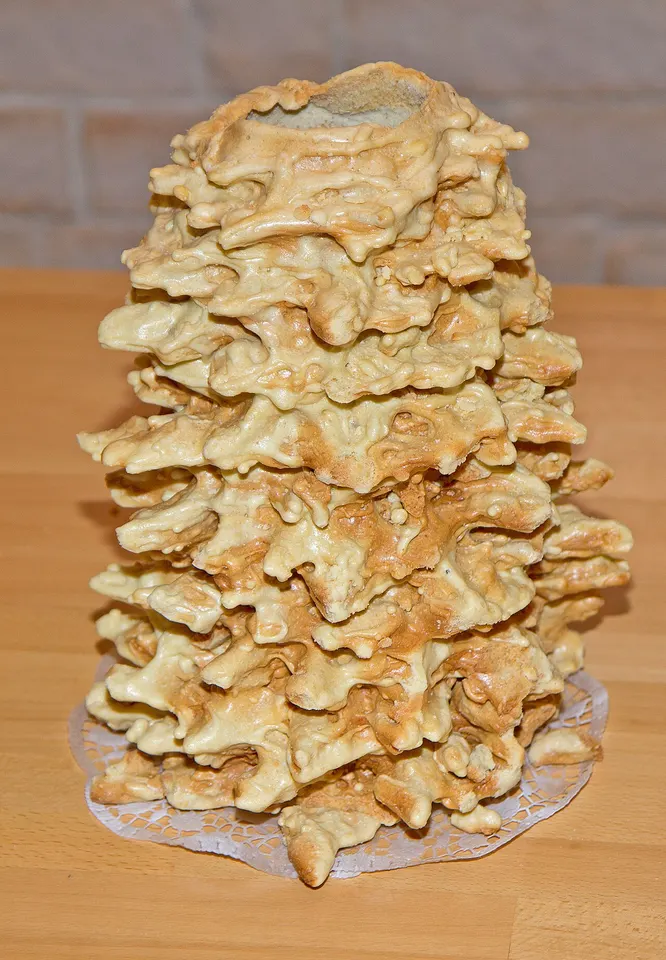
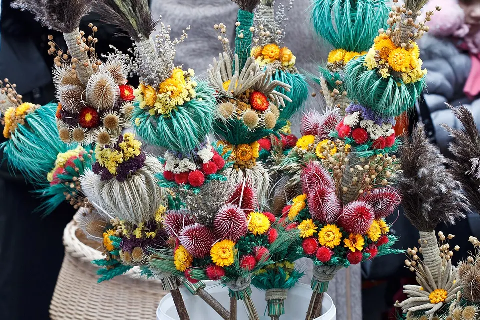

발트 3국 · 숨겨진 소도시
빌뉴스 3박 + 트라카이
Vilnius in 3 nights
바로크 구시가지와 호수 위 트라카이성. 발트에서 가장 저렴한 수도에서 쉬어 가는 3박.
여행 개요


구시가지와 우주피스 예술 지구를 걷고, 트라카이 호수성을 다녀오고, 20세기 역사 박물관을 봅니다. 헬싱키·바르샤바 등에서 1회 경유로 들어갑니다.
- 방문 국가
 리투아니아
리투아니아- 방문 도시
- 빌뉴스3박
- 여행 기간
- 단기 · 현지 3박 4일 인천 출발~귀국 약 5일 · 자료에서 권하는 기간 3박
- 추천 월
- 6·7·9월 여름 해가 길고 9월은 한산합니다.
- 여행 성격
- 역사·건축 조용·자연 · 낭만·고풍
- 난이도
- 초보자도 무난 대중교통으로 충분
- 추천 대상
- 조용한 도시에서 쉬고 싶은 혼자 여행자
이 코스의 장점
- 물가가 낮음
- 작은 구시가지라 걷기 쉬움
알아 둘 점
- 입출국 경유
지도


- 1숙박 도시(방문 순서)
- 추천 당일치기
- ✈입출국 공항
- 정기 교통편이 있는 구간
- 편수·운행 확인이 필요한 구간
지도: © OpenStreetMap 기여자
일자별 일정
현지 3박 4일 · 빌뉴스 3박
- Day 1
빌뉴스 바로크 구시가지
도착 인천 → 빌뉴스 공항. 도착일은 숙소 주변 위주로 가볍게.
새벽의 문 → 필리에스 거리 → 빌뉴스 대학 → 대성당 광장 → 게디미나스 탑 일몰.
세 십자가 언덕에서 구시가지 전경이 가장 잘 보입니다.
숙박: 빌뉴스
- Day 2
빌뉴스 우주피스와 트라카이
우주피스 "공화국" 예술 지구 → 성 안나 교회 → 오후에 트라카이 호수성(버스·기차 약 30~40분), 키비나이 맛보기.
숙박: 빌뉴스
- Day 3
빌뉴스 20세기의 기억
점령과 자유 투쟁 박물관(옛 KGB 건물) → MO 현대미술관 → 파우피스 지구.
숙박: 빌뉴스
- Day 4
출국 · 빌뉴스 공항
오전에 못 본 곳을 둘러보고 공항으로 이동합니다. 귀국편은 대부분 다음 날 한국에 도착합니다.
도시 간 교통
도시를 옮기지 않는 일정입니다.
국경 리투아니아 한 나라 안에서만 움직입니다.
한국 출발 항공 접근성
입국 · 빌뉴스 VNO 경유
헬싱키·바르샤바·이스탄불·프랑크푸르트 등에서 1회 경유.
- 왕복 항공권이라 마지막 날 출국 공항까지 돌아오는 이동 시간을 일정에 넣었습니다.
여행 팁과 주의사항
추천 월
6·7·9월
피할 시기
11~3월
월별
- 1
- 2
- 3
- 4
- 5
- 6
- 7
- 8
- 9
- 10
- 11
- 12
여름 해가 길고 9월은 한산합니다.
- 트라카이는 오전에 가면 호수 사진이 잘 나옵니다.
- 이런 분께: 조용한 도시에서 쉬고 싶은 혼자 여행자
- 현지 통화: 리투아니아 유로
여행 전 확인할 공식 정보
이 루트에서 사 올 기념품
지나가는 나라마다 머무는 기간에 맞춰 골랐고, 비슷한 상품(와인끼리, 꿀끼리 등)은 하나만 넣어 10개 이내로 추렸습니다. 기간 탭을 바꾸면 도시에 맞게 다시 고릅니다.
-
 리투아니아 · 패션·액세서리발트 호박 장신구발트해를 상징하는 대표 장신구
빌뉴스에서
리투아니아 · 패션·액세서리발트 호박 장신구발트해를 상징하는 대표 장신구
빌뉴스에서 -

리투아니아 · 먹거리·간식샤코티스 나무 케이크모양이 신기해 사진만 보여 줘도 화제가 되는 케이크
빌뉴스에서 -

리투아니아 · 전통 공예·생활용품빌뉴스 베르바알록달록 말린 꽃 장식, 빌뉴스만의 풍습
빌뉴스에서 -
 리투아니아 · 와인·전통주·음료트레요스 데비네리오스이름 이야기가 있는 허브 비터
빌뉴스에서
리투아니아 · 와인·전통주·음료트레요스 데비네리오스이름 이야기가 있는 허브 비터
빌뉴스에서 -
사진 준비 중
리투아니아 · 뷰티·향기스멜스 라이크 스펠스 향초빌뉴스 아틀리에에서 사거나 직접 만들 수 있는 향초
빌뉴스에서
-
 리투아니아 · 먹거리·간식사과 치즈(오부올류 수리스)이름부터 재미있는 사과 디저트
빌뉴스에서
리투아니아 · 먹거리·간식사과 치즈(오부올류 수리스)이름부터 재미있는 사과 디저트
빌뉴스에서 -
사진 준비 중
리투아니아 · 먹거리·간식그리부카이 버섯 과자앙증맞은 버섯 모양의 리투아니아 전통 과자
빌뉴스에서
-
사진 준비 중
리투아니아 · 전통 공예·생활용품리투아니아 리넨실용적이고 가벼운 고품질 리넨 생활용품
빌뉴스에서
-
사진 준비 중
리투아니아 · 전통 공예·생활용품리투아니아 흑도자기연기로 그을린 독특한 검은 도자기
빌뉴스에서
카드를 누르면 나라별 쇼핑·기념품 페이지에서 구매처·반입 유의사항·사진 출처를 볼 수 있습니다. 사진은 Wikimedia Commons 자유 라이선스 사진입니다.
출처
관련 콘텐츠
이 루트의 국가 페이지
비슷한 지역의 다른 루트
-

.jpg?width=960)
.jpg?width=960)
체코 모라비아 소도시: 프라하 · 올로모우츠 · 브르노
중기(6~7박) · 1개국 · 추천 5·9월
프라하 다음 체코. 관광객이 적은 바로크 대학 도시와 와인 지대를 기차로 돕니다.
-


체코 서보헤미아: 프라하 · 카를로비바리 · 플젠
중기(5~6박) · 1개국 · 추천 4·5·10월
온천 콜로네이드와 필스너 맥주의 고향을 도는 체코 서쪽 일주.
-


헝가리 일주: 부다페스트 · 에게르 · 발라톤
중기(6~7박) · 1개국 · 추천 6·7·8월
부다페스트만 보고 떠나기 아쉬운 사람을 위한 와인 마을과 호수 휴양.
-


슬로바키아 타트라: 브라티슬라바 · 하이 타트라 · 코시체 · 부다페스트
중기·장기(7~8박) · 2개국 · 추천 7·8·9월
비엔나로 들어가 슬로바키아를 기차로 가로질러 타트라 산을 걷고 부다페스트로 나오는 코스.
정보 확인일 2026-11-21